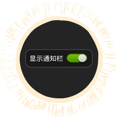

 通知栏工具箱可关闭 多多工具箱不是强制显示的，如果你觉得他影响体验，可以关闭它，点击通知栏中的“工具箱”图标，点击右上角的“设置”按钮，即可关闭通知。
工具箱中的位置可更改 击通知栏中的“工具箱”图标，点击右上角的“设置”按钮，点击“添加或移动应用位置”栏目中的图标，再弹出对话框中选择需要的应用。
工具箱采用最新技术 击通知栏中的“工具箱”图标，点击右上角的“设置”按钮，点击“添加或移动应用位置”栏目中的图标，再弹出对话框中选择需要的应用。
无骚扰，品质有保证 击通知栏中的“工具箱”图标，点击右上角的“设置”按钮，点击“添加或移动应用位置”栏目中的图标，再弹出对话框中选择需要的应用。
辽ICP备09016673号-6
北京多拓世纪科技有限公司